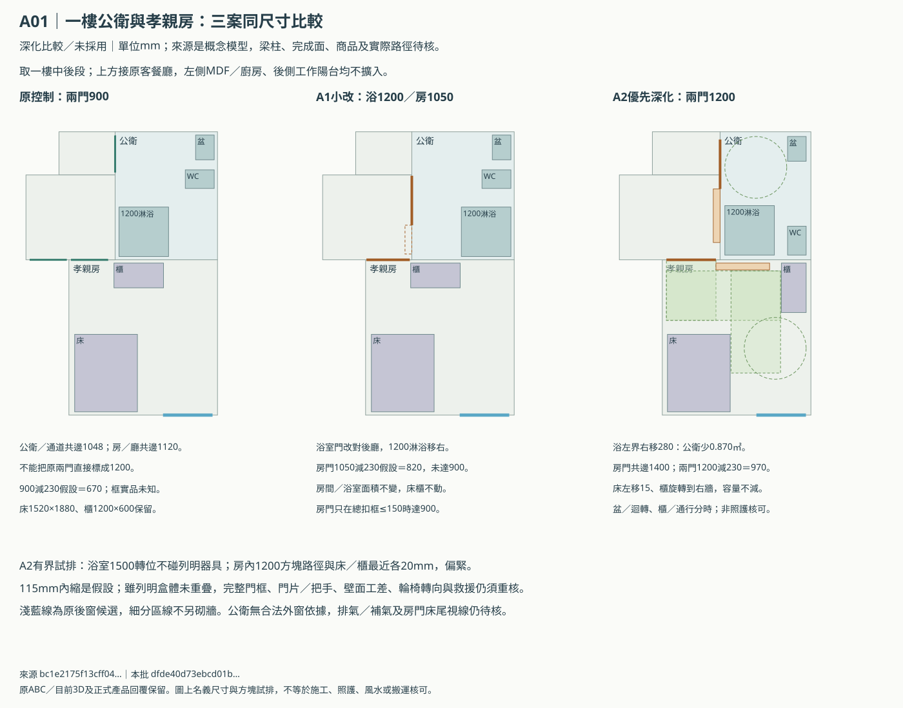
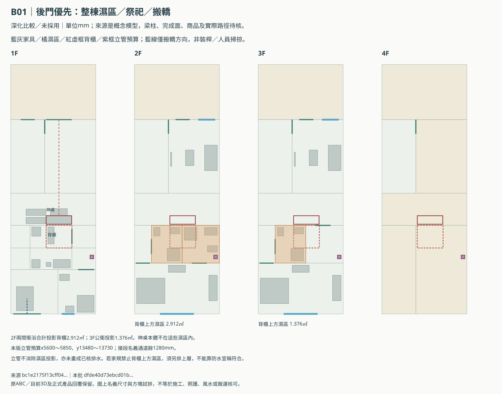
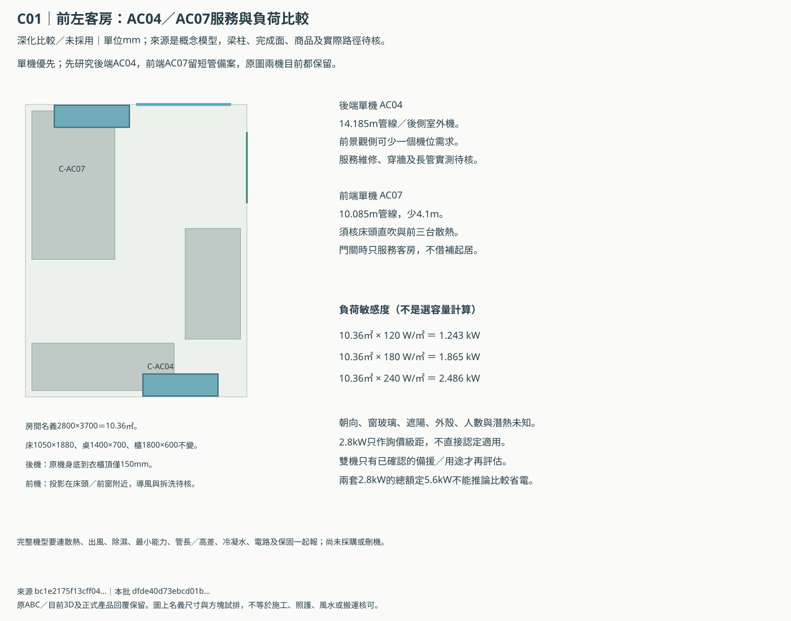
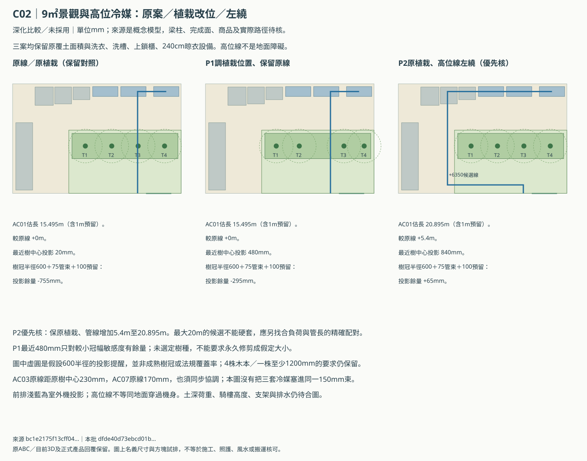

ABC下一輪深化：五項一起做
先看A門位與B濕區疊圖，再看C單機／景觀及全屋選品。原尺寸、前後門備案與目前3D保留；這份新增的是有尺寸的獨立比較。
未採用的深化比較。 列明盒體可放入，不代表完成牆面、照護、宗教、搬轎、結構或法定可建條件已通過。實際商品及工程回覆留白，不拿假設填成核定資料。
1. A一樓：優先把兩道門做成1200名義洞口比較
A2將公衛左界右移280mm，0.87024㎡改作乾區；孝親房仍13.572㎡，原床只左移15mm，120cm衣櫃旋轉到右牆，客餐家具與廚房不必搬。原通道與後廳交界不加牆，讓公衛1200門洞跨兩段乾區。
| 方案 | 面積與家具 | 門洞／條件 | 建議 |
|---|---|---|---|
| 原控制 | 床與櫃不動 | 兩門900；共邊1048／1120 | 保留對照 |
| A1小改 | 房間／浴室面積不變；淋浴移右 | 浴1200、房1050；房總扣框須≤150才有900 | 成本較低，照護門仍卡實品 |
| A2加寬乾區 | 浴室讓0.87024㎡；床左移15；120cm櫃轉右牆 | 兩洞1200；230假設扣框後970 | 優先深化，20mm側餘量仍偏小 |

浴室1500轉位在115mm假設內縮後避開列明本體；房內1200方塊路徑兩側最近各20mm，仍偏緊。衣櫃取物與通行、盆操作與轉位分時；完整門組、工差與真人轉向仍須核。外窗／排氣及門床視線未因此全部解決。
2. B：保留朝街祭祀及兩版搬轎，先把濕區風險說清楚
2F兩間衛浴覆蓋整個2.912㎡背櫃區，3F公衛覆蓋其中1.376㎡；部分便器／淋浴本體也在背櫃投影內。神桌本體在其前方，不能把兩者混稱。原屋頂及2F乾式祭祀上方區仍保留。
| 項目 | 後門優先 | 前門備案 |
|---|---|---|
| 祭祀正門 | 朝街、正對神桌；名義1800 | 同樣保留朝街中軸 |
| 搬轎 | 由後門直接進後左庫；後巷權利／高差／裝桿外廓待核 | 經前廳側緣；長凳／供桌分時整備，須獨立實演 |
| 2F背櫃上方濕區 | 2.912㎡，不是神桌本體上方 | 同樣2.912㎡，不能用換入口消除 |
| 3F背櫃上方濕區 | 1.376㎡ | 同樣1.376㎡ |
| 250×250立管預算 | 右側接段；名義通道餘1280 | 家務乾區；右側接段維持1250，不借後門版位置 |



建議先保乾背牆，不在法器櫃開清掃口。後門版250×250立管放右側接段，名義通道餘1280mm；前門版另放家務乾區，公衛接段維持1250mm，避開洗槽／洗衣操作及家務門前900矩形預算。完成淨寬／梁板／防火仍待核。污水通氣、盆淋浴廢水、冷凝水與雨水分列，終端都未核。
若家規也禁止「背櫃上方有浴廁」，就要重排上層濕區。新增立管、防水或裝飾天花都不能宣稱消除了這項投影。兩版的日常／祭祀／搬轎狀態仍獨立保留，方向線不是裝桿掃掠驗證。
3. C客房：單機優先，後端AC04先核，AC07留備案
同一間10.36㎡房目前同時預留AC04與AC07。關門時兩者都只服務客房；不能把客房機拿來補起居空間。後端比前端概念管線長4.1m，但能減少前方景觀側機位需求。
| 比較 | 優點 | 代價 |
|---|---|---|
| rear-single | 減少前景觀側一台機位需求，送風不從前床頭位置開始。 | 14.185m概念路徑，衣櫃頂到原機身底150mm，拆洗／氣流及跨區穿牆仍待手冊。 |
| front-single | 概念管線10.085m，較後端短4.1m。 | 室內機投影靠床頭／前窗；前方3台散熱及景觀配管未解，須核導風與清潔。 |
| dual-control | 只有經確認的備援或不同負荷用途才有額外價值。 | 同一10.36㎡房兩機增加設備、清潔、電路及機位成本；不能把雙機當省電結論。 |

120／180／240W/㎡的面積敏感度為1.243／1.865／2.486kW，尚無正式負荷。2.8kW只是報價候選級距，沒有直接配置或移除兩套機器。衣櫃上方拆洗、床頭導風及所有實機限制要一起核。
4. C景觀：優先核高位線左繞，保植栽與洗曬
保留右側9㎡景觀、3.393㎡覆土、四株木本示意與左側洗曬，提供P1改植栽、P2改AC01路線兩個方向。P2未降低配管，仍為+6350mm候選高位線。
| 方案 | AC01含預留估長 | 最近樹投影中心 | 600半徑＋75束＋100預留 |
|---|---|---|---|
| 原線／原植栽（保留對照） | 15.495 m | 20 mm | -755 mm（假設） |
| P1調植栽位置、保留原線 | 15.495 m | 480 mm | -295 mm（假設） |
| P2原植栽、高位線左繞（優先核） | 20.895 m | 840 mm | +65 mm（假設） |

P2增加5.4m至20.895m，已超過本批K系列索引20m上限，不能硬套；需另找符合負荷、管長及高差的精確配對。AC03及保留時AC07的原線亦近樹冠，尚需同步排支架／並排，不把三套當成同一束。土層與騎樓高度問題仍在原工程回覆表追蹤。
5. ABC：候選本體回套、逐房與同範圍詢價
| 候選 | 回套發現 | 下一個條件 |
|---|---|---|
| KOHLER K-28020T-S-0＋20970T-0 | 372×679可落入450×700代表本體 | 305完成牆管距、角閥／維修／座高；未採用 |
| TOTO CW981GUR／SW981GR＋TC301 | 390×707，比模型深7 | 按整組圖回套，不用700冒充 |
| CAESAR L2150S＋B260C | 500×400本體候選 | 支承／膝部／管線／操作點未知 |
| HCG LCS4175-3132E | 510×410小浴櫃 | A1/B1/C照護不可直套；B主臥900櫃不縮 |
| Panasonic K28／36／40／50精確配對候選 | 室內295高超模型280高15；容量未分配 | 逐室負荷、安裝手冊、散熱、排水及管長另核 |
| VILLES5700 | 只有五金資料，不是完整門組 | 全開900、完整外凸／收疊、門楣、救援另報 |
衛浴逐件回套門洞逐樘核對冷氣候選回套完整工程報價空表選品疊圖

| 獨立版本 | 衛浴間數 | 冷氣原配對 | 門洞去重列項 |
|---|---|---|---|
| a-rear-study | 3 | 7 | 24 |
| b-rear-split | 4 | 4 | 17 |
| b-front-split | 4 | 4 | 18 |
| c-split | 4 | 7 | 20 |
三組一般全衛歷史材料小計26,360／27,060／36,490元；C訪客公衛無淋浴則22,400／23,100／32,530元。含蓋、配件與安裝範圍要一致；照護、較大浴櫃及特殊門分項另報。無正式施工總價，沒有把材料價填進報價回覆。
逐房核對採現行控制版；A2等新方案另列圖，不把未採用尺寸混入採購數量。B前後互斥、C客房雙機用途待定，表列數量不能跨版本加總。
產品來源與價格口徑
市場候選資料與實際廠商回覆分開。價格及部分尺寸沿用2026-10-22資料；本輪重閱KOHLER含蓋公開價及TOTO707圖，新增國際牌K系列研究。部分原廠型錄只有搜尋索引摘錄、直接連結404，已明列，不當完整安裝手冊。
- kohler-shop：page-opened-2026-11-05；SKU28020T-S-0、含20970T-0蓋；公開價16800；不是含工程完工價。
- kohler-manual：prior-research-2026-10-22；尺寸及305管距沿用既有候選研究，本輪未重取PDF。
- toto-drawing：pdf-text-opened-2026-11-05；2024.02.19修訂圖：390寬、707整組投影（便器前端700）、785高、305管距；SW981GR、TC301另購。
- caesar-basin：prior-research-2026-10-22；500×400×185盆；1800。
- caesar-tap：prior-research-2026-10-22；3800；完整配件及操作點另核。
- hcg-cabinet：prior-research-2026-10-22；510×410×660整組；15730。
- hcg-shower：prior-research-2026-10-22；3960；軟管、掛座與完整工程範圍另列。
- panasonic-k-manual：usage-manual-text-opened-2026-11-05；K系列使用說明書、2021.06；本輪取得內容，不能代替當期安裝及維修淨空圖。
- panasonic-k-catalog：search-index-excerpt-only-2026-11-05-direct-fetch-404；2025型錄索引摘錄K28/36/40/50尺寸及20m/15m；完整現行安裝限制待原廠交付，不升格已核值。
- panasonic-energy：government-search-result-2026-11-05；CS-K28FA2/CU-K28FHA2，額定2.8kW、等級1、證書2025/01/15至2027/01/14；僅此精確配對，不套到別型號。
- door-hardware：prior-research-2026-10-22；VILLES5700僅五金候選，濕區完整門組／淨寬／防夾／救援／安裝價未核。
需要討論的三個選擇
| 選擇 | 我的建議 | 還缺什麼 |
|---|---|---|
| A是否用公衛0.870㎡換較寬入口 | A2先深化，A1保留低改動對照 | 完整門組、完成牆與輪椅轉向；20mm側餘量偏小 |
| B背櫃上方濕區是否也屬禁忌 | 未明確禁止前先保乾背牆、核外緣立管；若禁止則重排上層 | 家規範圍；防水不能代替宗教決策 |
| C客房是否需要真正雙機備援 | 單機、後端AC04先核；AC07留備案 | 負荷、使用習慣、實機氣流／拆洗及後側散熱 |
下載含其他工程待核項的決策表。已知偏好沿用；沒有替屋主填採用或替建商簽工程回覆。